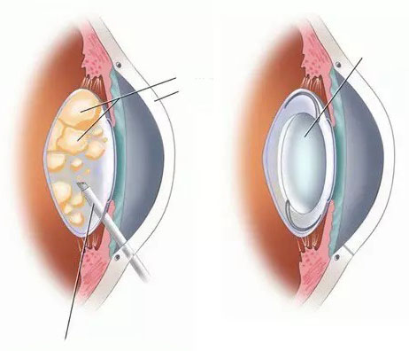

Prawie oślepła. 93-letnia Helena Ostapczyk ujawniła, jak udało jej się uniknąć
operacji zaawansowanej zaćmy.
Helena Ostapczyk nie spodziewała się wielu gości na swoje 93 urodziny. Przez wiele lat
mieszkała sama. Jej jedyna córka zmarła 16 lat temu. Wnuki i prawnuki mieszkają daleko.
W wieku 93 lat Helena czuje się bardzo młoda. Kilka lat temu udało jej się pozbyć zaćmy,
która prześladowała ją przez 45 lat! Jak to możliwe? Sekretem długowieczności podzieliła się z naszym
korespondentem.
„Od kilku lat dobrze widzę i znowu pracuję w ogrodzie. Hoduję zwierzęta: króliki, kurczaki"
Korespondent: Pani Heleno, głównym pytaniem jest, jak zachować tę radość, zdrowie,
energię, a nawet ogród w tak czcigodnym wieku. W czym tkwi sekret?
- Nie zawsze tak było. Całe życie pracowałam jako nauczycielka. A to jest
bardzo nerwowa i dynamiczna praca. W wieku 48 lat zaczęłam widzieć wszystko wokół mnie jakoś niewyraźnie,
początkowo nie było to problemem, ale potem zaczęłam widzieć wszystko jak przez zamglone szkło i każdego dnia
wydawało mi się, że jestem we mgle. U mnie rozwijała się zaćma związana z wiekiem.
Lekarze przepisali mi krople do oczu. Teraz nawet nie pamiętam, które. Trochę pomogli, ale
jeśli pewnego dnia zapomniałam ich użyć, znów widziałam niewyraźnie.
W tym samym czasie kontynuowałam pracę, chociaż wtedy czułam się jak stara kobieta. Pewnego
dnia zabrali mnie karetką prosto ze szkoły. Podczas zajęć wszystko stało się tak mętne, że nie mogłam zobaczyć
swoich dłoni, gdy machałam rękami. Coś mi wstrzyknęli, nałożyli na oczy opaskę. Leżałam w szpitalu przez miesiąc.
Kiedy bandaż został zdjęty, znów mogłam normalnie widzieć, ale nadal niewyraźnie. Następnie zostałam wypisana ze
szpitala i dostałam skierowanie do specjalisty.
Musiałam zażywać coraz więcej środków. Jednak to nie pomogło. I nie mogło pomóc, W wieku 68
lat stałam się niepełnosprawna.
W rzeczywistości powiedzieli mi, że mogę tylko utrzymać obecny wzrok. Rozumiałam, że nie ma
jeszcze skutecznej terapii zaćmy. Nie czułam się zbyt dobrze.

70% osób z niewyraźnym wzrokiem całkowicie tracą wzrok w ciągu 5 lat.
Pewnie tak by umarła. Gdyby nie jeden z moich starych znajomych. Jego syn, Adam, był
akademikiem Instytutu Badań Naukowych chorób okulistycznych. Poprosiłam go, żeby operował moje oczy To
mnie zniechęciło: co dziesiąta osoba po operacji oka traci wzrok CAŁKOWICIE I BEZ MOŻLIWOŚCI POWROTU DO ZDROWIA!
Powiedział mi, że zaćma wynika głównie z rozpadu białek w soczewce oka, a jeśli odzyskasz białka z soczewki,
możesz przywrócić wzrok w każdym wieku. W tym czasie w Izraelu przeprowadzono badania, w trakcie których
nauczyli się rekonstruować białka soczewki. Wtedy Adam zaproponował mi sposób na pozbycie się mojego
problemu. Wynik był niesamowity. W ciągu 2 tygodni całkowicie odzyskałam wzrok! Nie macie pojęcia, jak
fajnie jest znów widzieć przyrodę, zwierzęta i twarze! A co najważniejsze, nie trzeba już kupować wszystkich tych
kropli do oczu!
- Korespondent: Czy może Pani powiedzieć, jak dokładnie regenerowały się
białka soczewki? - W rzeczywistości jest to teraz łatwiejsze. Wcześniej trzeba było zamawiać
specjalne zioła z różnych krajów, robić z nich specjalne nalewki. Teraz nic nie musisz robić, a sam proces zajmuje
tylko 2 tygodnie!
Istnieje bardzo dobry środek o nazwie .
Jest specjalnie
wyprodukowany do naprawy białek soczewki. Należy tylko brać ten środek tylko dwa razy dziennie i nic więcej.
Ta metoda, wydaje się być funkcjonalna i skuteczna.
Przed opublikowaniem tego materiału i udostępnieniem go czytelnikom postanowiliśmy skonsultować się ze znanym
polskim okulistą Grzegorzem Grabowskim.
*prof. Grzegorz Grabowski – wiodący okulista, ekspert Światowej Organizacji Zdrowia ds.
walki ze ślepotą w Polsce
- Korespondent: Jak Pan myśli, czy odbudowa białek soczewki
naprawdę zapobiega ślepocie? - Tak, zgadza się. Wzrok pacjenta zależy od jakości i ilości
białek w oku. Oczywiście Pani Helena Ostapczyk na prymitywnym poziomie opisała wszystkie procesy zachodzące w
ciele, ale ogólnie wszystko się zgadza
- Korespondent: Czy może Pan opowiedzieć o ? Co to za
środek? - to
izraelski środek, który jest eksportowany do 18
krajów na całym świecie, w tym do Polski. Dystrybucją środku w naszym kraju zajmuje się Instytut Badań Naukowych
chorób okulistycznych. Innymi słowy, główna instytucja w kraju. Z tego, co wiem, środek powstał na bazie
produktów, które stosowano w terapii elity frankistowskiej. Co prawda, naukowcy zmienili samą formułę, ponieważ
obecna technologia jest znacznie bardziej zaawansowana niż 50-60 lat temu. Dlatego środek jest lepszy niż wtedy.
Chociaż już wtedy był uważany za niezwykle skuteczny i zdolny do poprawy wzroku. Głównymi składnikami
aktywnymi produktu są witaminy z grupy B, główne składniki
odżywcze dla funkcjonowania
systemu ochrony oczu przed uszkodzeniami oksydacyjnymi, szkodliwymi promieniami niebieskiego spektrum światła
słonecznego.. Razem
substancje te mogą przenikać do oka i syntetyzować
białka soczewki. To przyczynia się do przywrócenia funkcji oczy. Badamy ten środek w naszej Akademii,
bardzo dobrze syntetyzuje niezbędne białka w ciągu 1-2 tygodni stosowania. Chcę pokazać wyniki tych badań. W
badaniu wzięło udział 300 osób
Soczewka oka całkowicie przywróciła się: 96% badanych
Poprawa ostrości wzroku: 98% badanych.
Wyeliminowano niewyraźne widzenie: 97% badanych.
Ciśnienie w oku wróciło do normy: 88% badanych.
Oprócz witamin z grupy B zawiera inne
składniki, które są dobre
dla
oczu
i
naczyń krwionośnych. Nie wymienię wszystkich składników, wymienię tylko
kilka.
Cynk
Jest częścią enzymów regulujących widzenie w ciemności i pomagających szybko
przystosować się w jasnym świetle, redukując efekt jasnego błysku. Cynk pomaga również w utrzymaniu poziomu
witaminy A (witamina ta pomaga wzmocnić rogówkę oka oraz korzystnie wpływa na ostrość widzenia).
Ryboflawina
Pomaga poprawić krążenie krwi w naczyniach oczu, pozytywnie wpływa na postrzeganie
kolorów i widzenie w nocy. Przyczynia się do prawidłowego funkcjonowania soczewki, zapobiegając w ten sposób
rozwojowi zaćmy. Wspomaga gojenie tkanek, co jest bardzo ważne w przypadku dystrofii rogówki.
Podobnie ma
następujące właściwości:
Łagodzi zmęczenie, otępienie, swędzenie oczu
Zmniejsza podrażnienie oczu
Wyeliminuje niewyraźne widzenie.
Jest skuteczny w wielu chorobach oczu, od krótkowzroczności i nadwzroczności po jaskrę i
zaćmę.
Pomaga w zespole widzenia komputerowego (CVS) i jego konsekwencjach (eliminuje bóle głowy
oraz bóle pleców i karku)
Innymi słowy, środek jest złożony. Ma na celu pełną regenerację narządu wzroku po 40
roku
życia.
Bądź ostrożny! Stwierdzono, że teraz jest najlepszy czas na rozpoczęcie kuracji chorób oczu.
Dzięki stabilizacji średniej temperatury przyspiesza się metabolizm, zwiększa się krążenie krwi w organizmie,
zwiększa się przepływ krwi i tlenu do narządów wewnętrznych, zwiększa się efekt stosowania środka. Kuracja jest
o 64% łatwiejsza niż podczas innych pór roku.
- Korespondent: Gdzie można kupić i ile w przybliżeniu
kosztuje?
W czasie trwania promocji (do 23:59), wypełnij formularz dostępny niżej. Aktualnie promocja na produkt sięga aż
50%!
Ponieważ zapasy się wyczerpują,
producent zdecydował się
zakończyć dystrybucję środka w dniu (włącznie).
Komentarze:
Anna Moro
Dziękuję za ten artykuł! Jest to dla mnie ważne! Ostatnio często siedzę przy komputerze, a
mój wzrok się pogarsza. Zamówiłem
.
Maria
To super produkt, nawet mamie o tym pisałam!
Andrzej Kołpak
Zgadzam się z opinią specjalisty. Cudowny środek! Zanim zacząłem go używać, miałem wzrok:
jedno oko -2, a drugie -3 Teraz jest -1 w obu, co oznacza, że wzrok prawie całkowicie się zregenerował.
Wcześniej nic tak nie pomagało.
Adam Strzelnicki
Czekałem na ten środek. Obiecali dostarczyć za tydzień (Gdańsk). Kiedy dostanę, spróbuję, a
następnie napiszę moją opinię.
Andżelika Kropiewnicka
Ostatnio widziałam w Internecie jeden program o wzroku. Tam właśnie opowiadali o . Polecało go wielu
specjalistów.
Maria Kowalska
Zgadzam się ze wszystkimi komentarzami. Środek jest bardzo dobry. Cała nasza rodzina
stosowała ten środek, prawie wszyscy mieli słaby wzrok. Każdy miał zauważalną poprawę. U mojej córki po 1
kuracji wzrok poprawił się o 3 jednostki, a nawet specjalista to potwierdził. Jesteśmy bardzo zadowoleni z .
Izabella Jokwisz
Złożyłam zamówienie. W rzeczywistości jest to dość tani środek.
Anna Sachoniuk
jest dość
znanym środkiem. Dużo o nim słyszałam. Nawet znajomi
używali i bardzo chwalili.
Jan Mazur
Tak więc, jak obiecałem, piszę o swoim doświadczeniu w stosowaniu . Dostałem go na
czas, kurier dostarczył paczkę prosto do domu. A teraz najciekawsze - jego efekty. Używam go dopiero przez
tydzień, a już widzę wynik. Wzrok naprawdę się poprawia. Przedwczoraj nawet numer autobusu widziałem nawet z
daleka. Jestem całkowicie zadowolony z tego środka. Nadal go stosuję. Polecam wszystkim. Przynajmniej warto
spróbować.
Andrzej Stańczyk
Dziękuję. Dobrze, że jest w sprzedaży.
Spróbuję, mój wzrok
pogarsza się z każdym rokiem, ale boję się operacji. Sąsiad zrobił i od 2 lat cierpi na powikłania. Oczy ma
ciągle w ropie i rany źle się goją.
Anastazja Daniłowicz
Dziękuję!
Elwira Pokop
Za złymi rzeczami zawsze stoją duże pieniądze... W zeszłym roku przyjaciel przeszedł operację
oka. Dwa razy (musiał robić też na drugie oko). Wzrok w jednym oku bardzo się pogorszył. Jeśli chodzi o mnie,
zdecydowałam, że odzyskam wzrok bez operacji.
Luiza Kruk
Dzisiaj dostałam paczkę. Wszystko z nią w porządku. Szybko dostarczyli przesyłkę. Produkt
jest bardzo tani z rabatem 50%. Już
zaczęłam kurację.